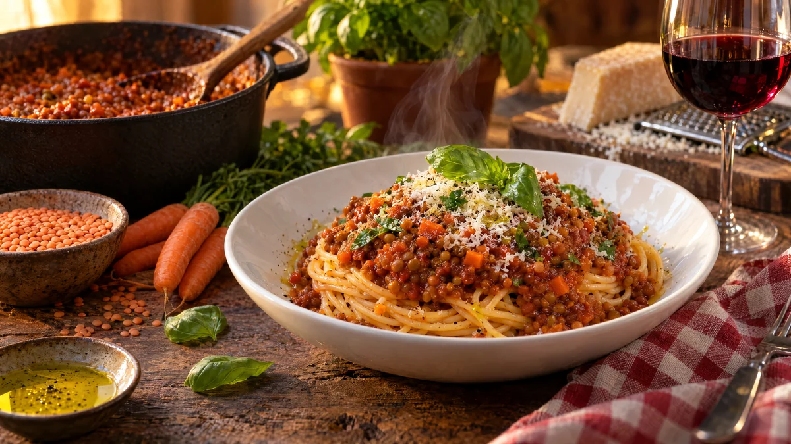

RESTFEST · RECEPTHuvudrätt
Linsbolognese med röda linser och morot
En påse röda linser, två burkar krossade tomater och ett par morötter puttrar till en tjock, djupröd köttfärssås helt utan kött. Linserna kokar sönder och ger samma mustiga konsistens, och en skvätt soja ger djup. Vänd den med spagetti och toppa med basilika, så blir det söndagspasta mitt i veckan.
- Förberedelse
- 10 min
- Tillagning
- 35 min
- Portioner
- 4
- Nivå
- Nybörjare
 Det här behöver du
Det här behöver du
JÄMFÖRT MED DIN KYL
Tryck på + vid det du behöver köpa.
Sås
Pasta
Till servering
Gör så här
- Finhacka löken och riv morötterna fint. Hacka vitlöken.
- Fräs lök och morot i olivoljan i en stor kastrull på medelvärme i 8 minuter, tills allt är mjukt och lätt gyllene. Rör ner vitlök och tomatpuré och fräs 1 minut till.
- Skölj linserna i en sil och lägg dem i kastrullen tillsammans med krossade tomater, vatten, buljongtärning, oregano, timjan, soja och socker.
- Låt sjuda under lock i 20–25 minuter, tills linserna har kokat sönder. Rör då och då och späd med lite vatten om såsen blir för tjock.
- Rör ner balsamvinägern och smaka av med salt och peppar.
- Koka spagettin i rikligt med saltat vatten enligt förpackningen. Spara 1 dl pastavatten innan du häller av.
- Vänd spagettin med en tredjedel av såsen och en skvätt pastavatten, så att varje sträng blir täckt.
Dekoration och servering
- Snurra spagettin till höga nystan i djupa tallrikar och skeda resten av såsen överst.
- Toppa med basilika, riven ost och några droppar olivolja.
- Såsen blir ännu godare dagen efter och går bra att frysa i portioner.
- Använd resten till en vegansk lasagne eller som fyllning i ugnsbakade paprikor.
Mått och ugnstemperaturer
Måtten är svenska (dl, msk, tsk, krm). Ugnstemperaturerna gäller vanlig ugn med över- och undervärme; med varmluft, sänk med 20 grader.